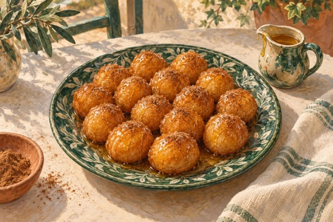

← Viikko 1 · Kreikka
Sunnuntai / Jälkiruoka
Loukoumades-hunajamunkit
Pieni erä hunajalla ja kanelilla maustettuja munkkeja.

Ainekset
Määrät yhteensä 4 annokseen, myös lisukkeisiin ja mahdolliseen kasvisversioon. Vesi mainitaan valmistusohjeessa.
- Vehnäjauho200 g
- Kuivahiiva1 tl
- Sokeri10 g
- Suola¼ tl
- Rypsiöljy (myös uppopaistoon)750 ml
- Hunaja80 g
- Jauhettu kaneli1 tl
Valmistus
- Sekoita jauhot, hiiva, sokeri ja suola. Vatkaa joukkoon 200 ml kädenlämpöistä vettä paksuksi, tahmeaksi taikinaksi. Peitä ja kohota lämpimässä noin tunti, kunnes taikina kuplii ja on kaksinkertaistunut.
- Lämmitä hunaja ja 20 ml vettä pienessä kattilassa. Siirrä sivuun. Kuumenna rypsiöljy 175 asteeseen syvässä, paksupohjaisessa kattilassa. Öljyä saa olla enintään kolmannes kattilan tilavuudesta. Käytä lämpömittaria ja pidä lapset poissa paistoalueelta.
- Laske taikinaa öljyyn pieninä nokareina kahden kostean teelusikan avulla. Paista erissä 3–4 minuuttia välillä käännellen, kunnes munkit ovat kullanruskeita ja sisältä kypsiä. Pidä öljy noin 175-asteisena. Valuta talouspaperilla.
- Kääntele munkit hunajaliemessä, ripottele päälle kanelia ja tarjoa lämpiminä.
Huomio
Ostoslistassa on mukana koko paistoöljyerä, ei vain ruokaan imeytyvä määrä. Jos 750 ml ei riitä sopivaan paistosyvyyteen, käytä kapeampaa tarkoitukseen sopivaa kattilaa. Älä täytä kattilaa liian täyteen.
Kypsymisaika riippuu laitteista ja ainesten koosta. Kypsennysohjeet (englanniksi): tarkista ohjeessa mainittu sisälämpötila puhtaalla paistomittarilla.